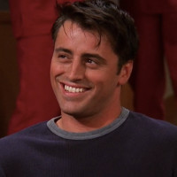
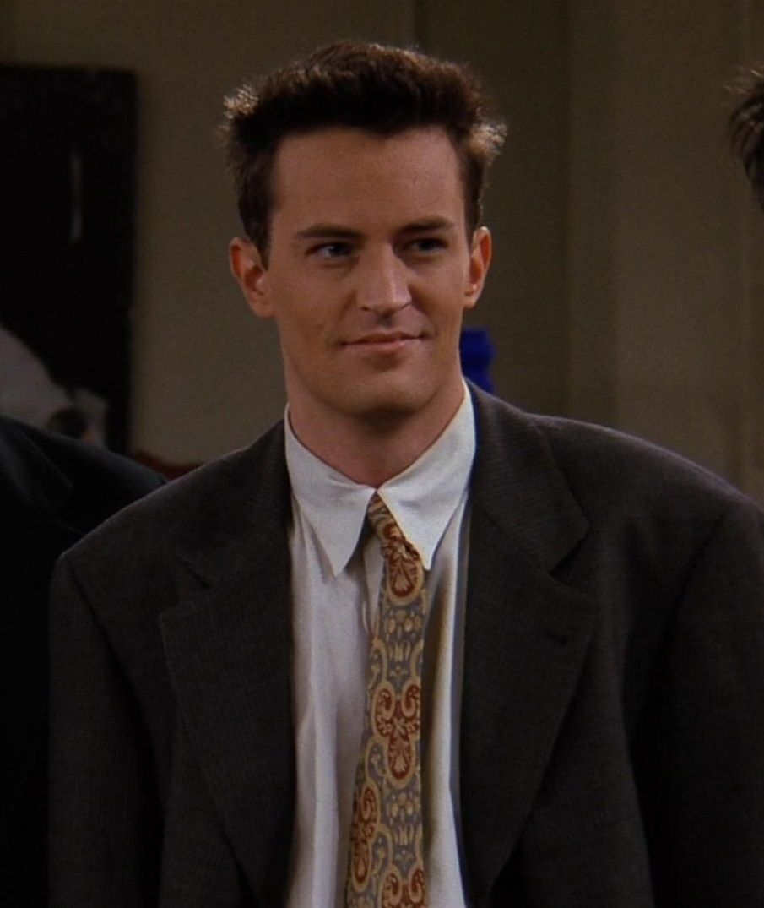

The characters are monica geller, rachel green, ross geller, joey tribbinanie, chandler bing and phoebe buffay. On this page we will be talking about all the main characters indivible. What makes the chacaters even more fun is that they all have there own catch phrases.
Monica Geller (I knowwwww)

Monica Geller is one of the main characters. She is the younger sister of Ross Gelller an other main character of the show. Monica is for sure the mom of the friend group. She likes to clean, cook and have game nights but she is very competitive. At the beginning of the show she worked at a restaurant, through the show she loses her job but then later on she gets her own restaurant.
All through Monica's life she has been kinda bad at relationships and after ending a important relationship after knowing it wouldn't go anywhere, she thought she would never find love but she finds her soulmate after all she gets married, adops children and has a happy life.
Rachel Green (noooooo)

Rachel Green is the queen, the girly girl of the group. She appears in the second scene after running away form a loveless wedding and marraige. Monica and Rachel are middle and high school friends. So after running away Rachel seeks out her old friend and later moves in with her in order to get away from her parents. Who still want her to marry the man she ran away from. She gets a job for the first time, as a waitress. She struggles a lot but eventually finds her way.
Talking about relationships she doesn't have trouble with dating but long time relationships are still some sort of trouble for her. But in the end she finds her soulmate Ross. Although it didn't go super smooth, they had a lot of trouble and misunderstandings. But they got through the jealousy, cheatings and other stuff.
Growing up Rachel had everything and was very spoiled and further in her life you notice that. But after ending up living and becoming friends with the group, she got rid of that attitude and became a lovely person. She has had the most growth of the group throughout the series.
Phoebe Buffay (ohh no)

Phoebe is the funniest female member of the group. She plays the guitar and enjoys singing. Besides this she makes hilarious songs. The most famous one is Smelly Cat. Phoebe was the old roommate of Monica but now she lives on her own further away. She is a vegetarian and is kind of a hippy who believes in fate, horoscopes and destiny. She has had the worst childhood of the group. Her mom killed herself when Phoebe and her twin sister were only fourteen but besides this she has a sweet, kind and above all a funny character.
Phoebe is the one of the characters who brings life and fun to the show more than the others. Even though she originally was supposed to be a supporting character, which is unthinkable when you have seen the show.
Joey Tribbiani (how you doin')
Joey Tribbiani is for sure the guy in the group who can get every girl he wants. Yet he is a very sweet, kind and soft character and in a way he is innocent. Joey likes to eat, act, hang out with the group, girls and much more. About Joey's youth is the least known. We do know that he has 7 sisters and no brothers, evenso he loves his sisters and family. Joey really doesn't like change in his innercircle of friends, so we see multiple times throughout the show. Esspecially at the end when Chandler and Monica decide to move from their appartment, to move outside of the city to raise there children. Still he is one of the most loveable characters.
Chandler Bing (could that BE any more...)
Chandler is the sarcastic king of the show. He has the funniest lines and can crack you up. Chandler's childhood is a bit different from the rest. He grew up in a rich family with a non-aging mom and a later discovered gay dad. After his dad finds out that he is gay he moves out and get's a divorce with Chandler's mom. Chandler suffered from this growing up, he started smoking at a very young age and because of what happend between his parents he is scared of real commitment. Besides this he has a hard time expressing his feelings and uses sarcasm as a way of showing how he feels. This is a reason why Monica and Chandlers relationship is so very special, because it is his first longterm relationship.
Ross Geller (PIVOT!!!)

Ross Geller is one of the most educated one of the group. He went to college (same as Chandler) and has a job in a museum as a paleontologist. He loves his job and tells a lot of stories to his friends and family, but they usually find it really boring and joke around about it a lot. Ross has had many failed releationships like his marriage with Carol (later turned out to be lesbien),
a failed marriage with a brit Emily (where he said the wrong name at the wedding) and a drunk marriage with Rachel. All of these ended in a divorce. That's how he got the nickname "Ross the divorce force" (he made it himself). But eventually he realises that his high school crush was the 'one' (Rachel Green).
Even though having a good relationship with his parents he sometimes finds it hard to open up to them. He gets jealous fast and this was the reason for one of the breakups between Rachel and himself. But besides all of that he is still loved by the group.